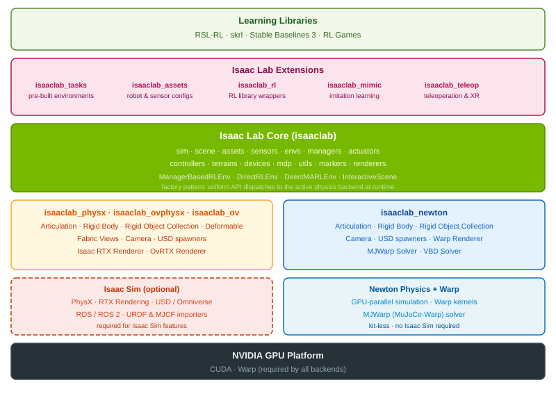

Isaac Lab & Newton — Robot Learning Evolves
🎯 학습 목표
- Isaac 로봇학습 프레임워크의 계보를 시간순으로 설명할 수 있다
- Isaac Lab이 이전 프레임워크들을 대체한 이유를 안다
- Newton(NVIDIA+DeepMind+Disney)의 differentiable·Warp 기반 특징을 이해한다
- Isaac Lab 3.0의 kit-less·factory pattern backend 전환 의미를 안다
- PhysX vs Newton backend의 trade-off를 비교할 수 있다
Chapter 3에서 본 Isaac Sim이 '로봇을 위한 시뮬레이터(디지털 트윈)'였다면, Isaac Lab은 그 시뮬레이터 위에서 실제로 로봇 정책(policy)을 학습시키는 프레임워크다. 둘의 관계는 게임 엔진과 게임의 관계에 가깝다 — Isaac Sim이 물리·렌더·센서를 제공하는 엔진이라면, Isaac Lab은 그 엔진 위에서 RL·IL 실험을 굴리는 '학습 하네스'다. three computers 프레임으로 보면 Isaac Lab은 정확히 시뮬레이션 컴퓨터(Omniverse/OVX) 위에서 DGX로 넘어갈 정책을 빚어내는 지점에 위치한다.
이 챕터의 핵심은 두 가지 진화다. 첫째는 계보의 통합이다. NVIDIA의 로봇 학습 도구는 Isaac Gym(Preview) → OmniIsaacGymEnvs → Orbit → Isaac Lab으로 이어지며 파편화되어 있었는데, 공식 문서가 못박듯 "Isaac Lab supersedes IsaacGymEnvs, OmniIsaacGymEnvs, and Orbit as the single robot learning framework for Isaac Sim" — 즉 Isaac Lab이 이 모든 것을 하나로 대체했다. 둘째는 물리 백엔드의 재편이다. 2026년 초 early access로 나온 Isaac Lab 3.0은 오랫동안 유일한 물리 엔진이던 PhysX 옆에 Newton이라는 새 백엔드를 나란히 세운다.
Newton은 단순한 물리 엔진 교체가 아니라 NVIDIA·Google DeepMind·Disney Research가 함께 만든 오픈소스 differentiable physics 엔진이며, 2025년 9월 Linux Foundation으로 기여되며 오픈 거버넌스로 넘어갔다. 이 챕터는 '왜 학습 프레임워크가 이렇게 여러 번 이름을 바꿨는가', '왜 이제 와서 새 물리 엔진이 필요한가', 그리고 'kit-less·factory pattern이라는 아키텍처 결정이 무엇을 가능하게 하는가'를 파고든다.
핵심 내용
4.1 계보 — Isaac Gym에서 Isaac Lab까지, 왜 네 번이나 바뀌었나
NVIDIA 로봇 학습 도구의 계보는 겉으로 보면 어지럽지만, 각 단계마다 명확한 '해결하려던 문제'가 있다.
Isaac Gym(한글: 아이작 짐) = NVIDIA 최초의 GPU 병렬 물리 기반 RL 환경. Preview 릴리스로 공개되었고, 결정적으로 아직 Omniverse 기반이 아니었다. Isaac Gym이 증명한 것은 단 하나 — 수천 개의 로봇 환경을 GPU 한 장에서 동시에 시뮬레이션하면 RL 학습이 CPU 시대보다 수백 배 빨라진다는 것이다. 기존 RL은 CPU 시뮬레이터(MuJoCo 단일 인스턴스)에서 경험을 모으느라 병목이었는데, Isaac Gym은 물리·관측·보상 계산을 전부 GPU에 올려 CPU-GPU 왕복을 없앴다.
하지만 Isaac Gym은 독자적인 렌더·자산 파이프라인을 썼기에 Omniverse 생태계(OpenUSD, RTX 렌더, SimReady asset)와 단절되어 있었다. 그래서 나온 것이 OmniIsaacGymEnvs(Omniverse Isaac Gym Envs) — Isaac Gym의 병렬 학습 이점을 Omniverse/Isaac Sim 위로 옮긴 버전이다. 이제 학습 환경이 OpenUSD 씬과 RTX 렌더를 공유할 수 있게 됐다.
그다음 Orbit(오빗)은 환경 정의를 더 모듈화하고 재사용 가능한 task·sensor·asset 추상을 도입한 연구 프레임워크였다. 그리고 이 Orbit이 그대로 Isaac Lab으로 rename되었다 — 즉 Isaac Lab의 코드 뿌리는 Orbit이다. 최종적으로 NVIDIA는 파편화된 세 갈래(IsaacGymEnvs·OmniIsaacGymEnvs·Orbit)를 공식적으로 은퇴시키고 Isaac Lab 하나로 수렴시켰다. 계보를 한눈에 보면 다음과 같다.
| 단계 | 핵심 기여 | Omniverse 기반 | 상태 |
|---|---|---|---|
| Isaac Gym (Preview) | GPU 대량 병렬 물리로 RL 가속 | 아니오 | deprecated |
| OmniIsaacGymEnvs | 병렬 학습을 Omniverse/Isaac Sim으로 이식 | 예 | deprecated |
| Orbit | 재사용 가능한 task/env/asset 모듈화 | 예 | Isaac Lab으로 rename |
| Isaac Lab | 위 셋을 대체하는 단일 로봇 학습 프레임워크 | 예 | 현행 |
이 흐름의 교훈은, NVIDIA가 '실험적 아이디어(GPU 병렬) → 생태계 통합(Omniverse) → 재사용 추상(Orbit) → 표준 프레임워크(Isaac Lab)'라는 성숙 곡선을 밟았다는 것이다.
4.2 Isaac Lab의 구조 — Manager 기반 환경과 RL/IL 어댑터
Isaac Lab(한글: 아이작 랩) = Isaac Sim 위에서 동작하는 로봇 학습 프레임워크로, RL(강화학습)과 IL(모방학습)을 위한 재사용 가능한 task·environment·asset을 제공한다. 핵심 설계 철학은 '환경 정의를 코드가 아니라 config로 조립한다'는 것이다.
Isaac Lab의 환경은 보통 여러 Manager의 조합으로 정의된다. observation manager(무엇을 관측할지), action manager(무엇을 제어할지), reward manager(무엇을 보상할지), termination manager(언제 에피소드를 끝낼지), event manager(도메인 randomization·리셋 이벤트)로 나뉜다. 사용자는 각 manager에 어떤 term을 넣을지 선언적으로 조립하며, 이 방식 덕분에 하나의 로봇 task를 살짝 바꿔 다른 실험으로 파생시키기가 쉽다. 이것이 Orbit에서 물려받은 '모듈화'의 실체다.
RL을 실제로 돌리려면 정책 최적화 알고리즘이 필요한데, Isaac Lab은 특정 라이브러리에 묶이지 않고 여러 RL 어댑터를 제공한다 — RSL-RL, skrl, Stable Baselines 3, RL Games. 같은 환경을 이 넷 중 어느 것으로도 학습시킬 수 있다는 뜻이다. 각 라이브러리는 PPO 등의 구현 디테일과 성숙도가 다르므로, 연구자는 벤치마크 재현이나 성능에 맞춰 골라 쓴다.
모방학습·데이터 수집 쪽도 두 컴포넌트로 갖춰져 있다. isaaclab_mimic = IL(모방학습)을 위한 데이터 증강·정책 학습 모듈로, 소수의 시연을 대량의 학습 궤적으로 불려주는 역할을 한다(이것이 뒤 챕터의 GR00T·합성 데이터 흐름과 이어진다). isaaclab_teleop = XR(VR 헤드셋 등) 원격조작으로 사람이 직접 로봇을 조종해 시연 데이터를 만드는 모듈이다. 즉 Isaac Lab 안에서 '사람 시연 수집(teleop) → 데이터 증강(mimic) → 정책 학습(RL/IL 어댑터)'이라는 전체 루프가 닫힌다.
정리하면 Isaac Lab은 '환경은 manager로 조립, 학습은 어댑터로 교체, 데이터는 teleop·mimic으로 확보'라는 세 축의 조립식 프레임워크다. 이 조립성이 다음 절에서 볼 백엔드 교체를 가능하게 하는 토대가 된다.

4.3 Newton — NVIDIA·DeepMind·Disney가 함께 만든 오픈 물리 엔진
Newton(한글: 뉴턴) = NVIDIA, Google DeepMind, Disney Research가 공동 개발한 오픈소스 GPU 가속 물리 엔진이다. 2025년 3월 GTC에서 발표되었고, 발표 무대에서 Disney의 Star Wars BDX droid가 Newton으로 구동되며 시연되었다. 이후 2025년 9월 29일 Linux Foundation에 기여되어 오픈 거버넌스 체제로 넘어갔다 — 즉 이제 Newton은 특정 벤더의 폐쇄 자산이 아니라 커뮤니티가 함께 발전시키는 표준 후보다.
Newton의 기술적 뿌리는 두 가지다. 첫째 NVIDIA Warp — 파이썬으로 GPU 커널을 작성하게 해주는 프레임워크로, 물리 계산을 GPU 네이티브로 표현한다. 둘째 OpenUSD — Chapter 2에서 본 공통 3D 데이터 층으로, Newton의 씬·자산이 Omniverse 생태계와 자연스럽게 호환된다. 이 조합 덕에 Newton은 Warp 위에서 물리를 '네이티브로' 표현하면서도 USD 씬을 그대로 먹을 수 있다.
하지만 Newton의 진짜 차별점은 differentiable physics(미분 가능 물리)다.
Differentiable physics(미분 가능 물리) = 시뮬레이션 전체를 하나의 미분 가능한 함수로 보고, 최종 결과(예: 로봇이 넘어졌는지)에 대한 gradient를 시뮬레이션을 거꾸로 타고 입력 파라미터(제어 신호, 물성치)까지 전파할 수 있는 물리 엔진.
왜 이게 중요한가? 전통적 RL은 물리를 블랙박스로 두고 '행동을 바꿔보고 보상이 오르면 채택'하는 방식이라 gradient 정보가 없어 샘플 효율이 낮다. 반면 미분 가능 물리에서는 '이 관절 토크를 조금 키우면 손끝 위치가 어느 방향으로 얼마나 움직이는지'를 gradient로 직접 계산할 수 있다. 개념적으로는 다음과 같다.
\[\frac{\partial \, \text{Loss}}{\partial \, \theta_{\text{control}}} = \frac{\partial \, \text{Loss}}{\partial \, s_T} \cdot \prod_{t} \frac{\partial \, s_{t+1}}{\partial \, s_t}\]
즉 최종 상태의 loss를 시간축을 따라 각 물리 스텝의 미분으로 역전파해 제어 파라미터까지 gradient를 흘린다. 이는 trajectory optimization·system identification·정밀 조작(dexterous manipulation) 학습에서 큰 이점이 된다. 여기에 Newton은 확장성 높은 multiphysics(강체·연체·천·유체 등 이질적 물리의 결합)를 지향해, Disney BDX droid처럼 복잡한 캐릭터 운동을 다룰 수 있다. 현재 버전은 Newton 1.0이다.
4.4 Isaac Lab 3.0 — kit-less와 factory pattern 백엔드
Newton이라는 새 물리 엔진이 생겼다고 해서, 사용자가 기존 코드를 전부 다시 짜야 한다면 아무도 쓰지 않을 것이다. Isaac Lab 3.0(2026년 초 early access)의 아키텍처 핵심은 바로 이 전환 비용을 없애는 데 있다.
첫째, kit-less(킷리스) 모드다.
Kit-less = Isaac Sim(내부적으로 Omniverse Kit 위에서 동작)을 통째로 설치하지 않고, Newton backend만으로 경량 실행·배치가 가능한 모드.
지금까지 Isaac Lab을 돌리려면 무거운 Isaac Sim/Kit 런타임 전체가 필요했다. RTX 렌더나 풍부한 GUI가 필요 없는 상황(예: 헤드리스 대량 학습, 경량 배치 환경)에서도 전체 스택을 짊어져야 했던 것이다. kit-less는 이 의존성을 끊어, Newton 물리와 최소한의 코어만으로 학습·롤아웃을 돌릴 수 있게 한다. 이는 클라우드에서 대량 병렬 학습을 띄우거나, 렌더가 필요 없는 물리 중심 실험을 저비용으로 굴릴 때 결정적이다.
둘째, factory pattern(팩토리 패턴) 백엔드 디스패치다. 핵심 아이디어는 '유저 코드는 물리 엔진을 몰라야 한다'는 것이다. 사용자가 '이 로봇 asset을, 이 센서를 만들어줘'라고 선언하면, Isaac Lab 3.0이 런타임에 이 요청을 선택된 backend(PhysX 또는 Newton)로 디스패치해 실제 객체를 생성한다. 결과적으로 유저의 task·env 코드는 backend가 무엇이든 그대로 불변이고, 백엔드 전환은 config 한 줄(sim.physics_backend를 physx↔newton)로 끝난다. 이것이 4.1의 '조립식 설계'가 물리 엔진 층까지 확장된 모습이다.
이 구조는 패키지 분할로 물리적으로 구현된다.
| 패키지 | 역할 | Isaac Sim 필요 | kit-less |
|---|---|---|---|
| isaaclab | 코어 프레임워크(manager·config·factory) | - | - |
| isaaclab_physx | PhysX backend | 필요 | 불가 |
| isaaclab_newton | Newton backend | 불필요 가능 | 가능 |
| isaaclab_ov | RTX tiled 렌더링(Omniverse) | 필요 | 불가 |
즉 코어(isaaclab)는 backend를 모른 채 팩토리 인터페이스만 알고, 실제 구현은 isaaclab_physx / isaaclab_newton이 각각 채운다. Isaac Lab 3.0 자체는 Newton 1.0을 기반으로 하며, 특히 dexterous(정밀 손 조작) task의 RL을 강화한 것이 이 릴리스의 초점이다 — 이는 앞 절의 differentiable physics 이점과 정확히 맞물린다.
4.5 PhysX vs Newton — 어느 백엔드를 언제 쓰는가
Isaac Lab 3.0이 두 backend를 나란히 두었다는 것은, 둘이 서로를 대체하는 게 아니라 상보적이라는 뜻이다. 각각의 성격을 이해해야 올바르게 고를 수 있다.
PhysX(피직스) = NVIDIA의 성숙한 상용 물리 엔진으로, Isaac Sim에 깊이 통합되어 있고 오랜 검증을 거친 안정적·기능 풍부한 기본 백엔드. 대부분의 로봇 시뮬레이션(관절 로봇, 마찰·접촉이 중요한 조작)에서 오랫동안 검증된 결과를 낸다. 반면 Isaac Sim/Kit 전체 런타임을 요구하고, 기본적으로 미분 가능하지 않다.
Newton(뉴턴) = Warp 네이티브·kit-less 실행 가능·differentiable을 강점으로 하는 새 백엔드. 경량 배치와 gradient 기반 최적화, 확장 multiphysics에 유리하지만, PhysX만큼의 오랜 실전 검증·기능 성숙도는 아직 쌓는 중이다.
| 기준 | PhysX | Newton |
|---|---|---|
| 성숙도·검증 | 높음(오랜 실전) | 새로움(1.0) |
| Isaac Sim 통합 | 깊음(기본) | 독립 가능 |
| kit-less 경량 실행 | 불가 | 가능 |
| differentiable physics | 아니오 | 예 |
| 거버넌스 | NVIDIA | 오픈(Linux Foundation) |
| 대표 강점 | 안정적 접촉·관절 | gradient 최적화·multiphysics |
실무 판단의 축은 대략 이렇다. (1) '검증된 안정성과 기존 자산 재사용이 최우선'이면 PhysX. (2) '헤드리스로 클라우드에서 초대량 병렬 학습을 저비용으로 굴리고 싶다'면 kit-less가 되는 Newton. (3) 'trajectory optimization이나 정밀 조작을 gradient로 풀고 싶다'면 differentiable한 Newton. (4) '오픈 거버넌스·커뮤니티 확장을 중시'하면 Newton.
중요한 것은, factory pattern 덕분에 이 선택이 되돌릴 수 있는 결정이 되었다는 점이다. 예전이라면 물리 엔진 교체가 프로젝트 재작성을 의미했지만, 이제는 같은 task 코드를 두 backend에서 돌려 결과를 대조하는 것 자체가 하나의 검증 방법이 된다. 이는 sim-to-real의 신뢰성(한 엔진의 특이한 접촉 처리에 정책이 overfit되지 않았는지)을 높이는 실질적 무기다.
💡 비유로 이해하기
Isaac Lab의 진화를 이해하려면, 노트북과 콘센트를 떠올리면 좋다. 예전의 Isaac Gym → OmniIsaacGymEnvs → Orbit 시대는, 나라마다 콘센트 모양이 다른 상황과 같았다. 미국에 가면 미국 코드, 유럽에 가면 유럽 코드를 새로 사야 했다 — 즉 새 도구가 나올 때마다 환경 정의를 새로 짜야 했다. NVIDIA가 이걸 Isaac Lab 하나의 표준 콘센트로 통일한 것이 계보 통합이다.
그다음 Isaac Lab 3.0의 factory pattern은 '멀티 어댑터 플러그'다. 당신의 노트북(task·env 코드)은 그대로 두고, 벽에 꽂는 어댑터 헤드만 PhysX용에서 Newton용으로 딸깍 바꾸면 된다. 노트북은 자기가 미국 전기를 먹는지 유럽 전기를 먹는지 알 필요가 없다 — 그게 'backend에 무관하게 유저 코드 불변'의 의미다.
kit-less는 여기서 한 발 더 나간다. 원래는 콘센트를 쓰려면 집 전체의 발전기(무거운 Isaac Sim/Kit 런타임)를 돌려야 했는데, kit-less는 벽의 배터리 팩(Newton 단독)만으로도 노트북을 켜게 해준다. 렌더라는 화려한 조명이 필요 없는 밤샘 계산(헤드리스 대량 학습)에는, 발전기 없이 배터리만으로 충분하고 훨씬 싸다. 그래서 낮(정밀 시각 검증)에는 발전기(PhysX+RTX), 밤(대량 물리 학습)에는 배터리(kit-less Newton)를 골라 쓰는 것이다.
💻 코드 예시
Isaac Lab의 ManagerBasedRLEnvCfg 스타일 환경 config와, factory pattern이 physx·newton backend를 어떻게 '유저 코드 불변'으로 스위칭하는지를 보여주는 개념 코드다. 실제 API와 세부는 다를 수 있는 pseudo이며, 요점은 '환경은 그대로, 물리 backend만 교체'되는 구조다.
from dataclasses import dataclass, field
# --- 물리 backend 선택: 이 한 줄만 바꾸면 됨 (factory가 나머지를 처리) ---
@dataclass
class SimCfg:
dt: float = 1 / 120
physics_backend: str = "newton" # "physx" or "newton"
kit_less: bool = True # Newton일 때만 유효: Isaac Sim 없이 경량 실행
# --- Manager 기반 환경 정의: backend를 전혀 언급하지 않음 ---
@dataclass
class ObservationCfg:
terms: list = field(default_factory=lambda: ["joint_pos", "joint_vel", "ee_pose"])
@dataclass
class RewardCfg:
terms: dict = field(default_factory=lambda: {"reach_goal": 1.0, "action_rate": -0.01})
@dataclass
class ManagerBasedRLEnvCfg:
sim: SimCfg = field(default_factory=SimCfg)
num_envs: int = 4096 # GPU 대량 병렬 (Isaac Gym이 연 유산)
observations: ObservationCfg = field(default_factory=ObservationCfg)
rewards: RewardCfg = field(default_factory=RewardCfg)
robot_usd: str = "omniverse://assets/robots/franka.usd" # OpenUSD asset
# --- factory: 런타임에 backend별 구현으로 디스패치 ---
def make_physics(sim: SimCfg):
if sim.physics_backend == "physx":
from isaaclab_physx import PhysXEngine # Isaac Sim 필요, 미분 불가
return PhysXEngine(dt=sim.dt)
elif sim.physics_backend == "newton":
from isaaclab_newton import NewtonEngine # kit-less 가능, differentiable
return NewtonEngine(dt=sim.dt, kit_less=sim.kit_less, differentiable=True)
raise ValueError(sim.physics_backend)
def build_env(cfg: ManagerBasedRLEnvCfg):
engine = make_physics(cfg.sim) # 여기서만 backend가 갈림
engine.load_usd(cfg.robot_usd)
engine.spawn(num_envs=cfg.num_envs)
# 이후 observation/reward manager는 engine 종류를 몰라도 동일하게 동작
return engine핵심은 네 가지다. (1) 환경 정의(ManagerBasedRLEnvCfg)는 backend를 모른다 — observation·reward term과 robot_usd만 선언하며, PhysX인지 Newton인지 한 글자도 등장하지 않는다. (2) make_physics가 factory — 오직 이 함수만 physics_backend 값을 보고 isaaclab_physx.PhysXEngine 또는 isaaclab_newton.NewtonEngine을 import·생성한다. 유저는 SimCfg.physics_backend 한 줄만 바꾸면 전체 학습이 다른 물리로 돌아간다. (3) kit_less는 Newton 전용 스위치 — True면 무거운 Isaac Sim/Kit 없이 경량 실행이 되어 클라우드 대량 학습에 유리하다. (4) num_envs=4096은 Isaac Gym이 연 GPU 대량 병렬 유산으로, 계보 전체가 이 한 필드로 이어진다. differentiable=True는 Newton에서 gradient 기반 최적화를 켜는 지점이다.
🏭 현업에서의 평가
✅ 시니어가 보는 것
- 계보(Isaac Gym→OmniIsaacGymEnvs→Orbit→Isaac Lab)를 각 단계의 '해결한 문제'와 함께 설명하는가 — 특히 Isaac Gym이 아직 Omniverse 기반이 아니었다는 점
- Isaac Lab의 manager 기반 조립식 환경 설계와 RL 어댑터(RSL-RL·skrl·SB3·RL Games) 교체성을 이해하는가
- Newton의 세 핵심 — Warp+OpenUSD 기반, differentiable physics, NVIDIA+DeepMind+Disney 공동개발/Linux Foundation 오픈 거버넌스 — 를 정확히 말하는가
- kit-less와 factory pattern이 각각 무엇을 가능하게 하는지(경량 배치, backend 무관 유저 코드) 구분하는가
- PhysX vs Newton trade-off를 실무 시나리오(헤드리스 대량 학습 vs 검증된 안정성 vs gradient 최적화)에 매핑하는가
⚠️ 레드 플래그
- Isaac Sim과 Isaac Lab을 같은 것으로 뭉뚱그리는 경우(엔진 vs 그 위 학습 프레임워크)
- Newton이 PhysX를 '완전히 대체'한다고 단정하는 경우 — 실제로는 상보적이며 factory로 공존
- differentiable physics가 왜 유용한지(gradient 전파로 샘플 효율·정밀 조작·trajectory opt) 설명하지 못하는 경우
- Isaac Gym이 처음부터 Omniverse 기반이었다고 잘못 아는 경우
- kit-less를 단순 '가벼운 버전'으로만 이해하고 Isaac Sim/Kit 의존성 제거라는 본질을 놓치는 경우
🎤 예상 인터뷰 질문
- Q1 (계보와 통합): NVIDIA의 로봇 학습 도구가 Isaac Gym부터 Isaac Lab까지 왜 여러 번 바뀌었는가? 각 단계가 해결한 문제와, Isaac Lab이 이전 셋을 supersede했다는 공식 입장의 의미를 설명하라.
- Q2 (backend 아키텍처): factory pattern과 kit-less가 각각 무엇이며, 이 둘이 있을 때 PhysX↔Newton 전환이 유저 코드에 어떤 영향을 주는가? config 관점에서 답하라.
- Q3 (trade-off 판단): 클라우드에서 4096개 환경을 헤드리스로 대량 학습시켜야 하고, 이후 정밀 손 조작(dexterous)을 gradient로 최적화하려 한다. PhysX와 Newton 중 무엇을, 왜 고르겠는가? 반대로 PhysX가 나은 상황도 하나 들어라.
✨ 핵심 요약
Isaac Lab은 파편화된 계보를 하나로 수렴시켰다
Isaac Gym(Preview, 비-Omniverse) → OmniIsaacGymEnvs → Orbit → Isaac Lab의 흐름에서, 공식적으로 Isaac Lab이 앞의 셋(IsaacGymEnvs·OmniIsaacGymEnvs·Orbit)을 대체하는 단일 로봇 학습 프레임워크가 되었다. Orbit이 그대로 rename된 것이 Isaac Lab이다.
Isaac Sim은 엔진, Isaac Lab은 그 위의 학습 하네스
Isaac Sim이 물리·렌더·센서를 제공하는 시뮬레이터라면, Isaac Lab은 그 위에서 RL·IL로 로봇 정책을 빚어내는 프레임워크다. three computers에서 시뮬레이션 컴퓨터가 DGX(학습)로 넘길 정책을 만드는 지점이다.
환경은 manager로 조립, 학습은 어댑터로 교체
Isaac Lab은 observation·action·reward·termination·event manager로 환경을 선언적으로 조립하고, RSL-RL·skrl·Stable Baselines 3·RL Games 중 골라 학습한다. teleop(XR 시연 수집)과 mimic(IL 데이터 증강)으로 데이터 루프까지 닫는다.
Newton은 NVIDIA·DeepMind·Disney의 오픈 differentiable 물리 엔진
GTC 2025.03에 Disney BDX droid 시연으로 발표되었고, 2025.09.29 Linux Foundation에 기여되어 오픈 거버넌스가 되었다. Warp+OpenUSD 기반이며 gradient를 시뮬레이션에 전파하는 differentiable physics와 확장 multiphysics가 핵심이다.
differentiable physics는 gradient로 학습·최적화를 가속한다
물리 스텝을 미분 가능하게 만들어 최종 loss의 gradient를 제어 파라미터까지 역전파한다. 이는 blackbox RL보다 샘플 효율이 높고, trajectory optimization과 dexterous manipulation 학습에 특히 유리하다.
Isaac Lab 3.0의 두 축 — kit-less와 factory pattern
kit-less는 Isaac Sim/Kit 전체 설치 없이 Newton backend만으로 경량 실행·배치를 가능하게 하고, factory pattern은 런타임에 asset·sensor를 PhysX/Newton으로 디스패치해 유저 task 코드를 backend에 무관하게 불변으로 유지한다.
패키지 분할이 아키텍처를 물리적으로 구현한다
isaaclab(코어)는 backend를 모른 채 팩토리 인터페이스만 알고, isaaclab_physx(PhysX, Isaac Sim 필요)·isaaclab_newton(kit-less 가능)·isaaclab_ov(RTX tiled 렌더)가 구현을 채운다. Isaac Lab 3.0은 Newton 1.0 기반이며 dexterous RL을 강화했다.
PhysX와 Newton은 대체가 아니라 상보 관계
PhysX는 검증된 안정성·깊은 Isaac Sim 통합이 강점이고, Newton은 kit-less 경량 실행·differentiable·오픈 거버넌스가 강점이다. factory pattern 덕에 backend 선택이 되돌릴 수 있는 config 결정이 되어, 두 엔진 대조가 sim-to-real 검증 수단이 된다.